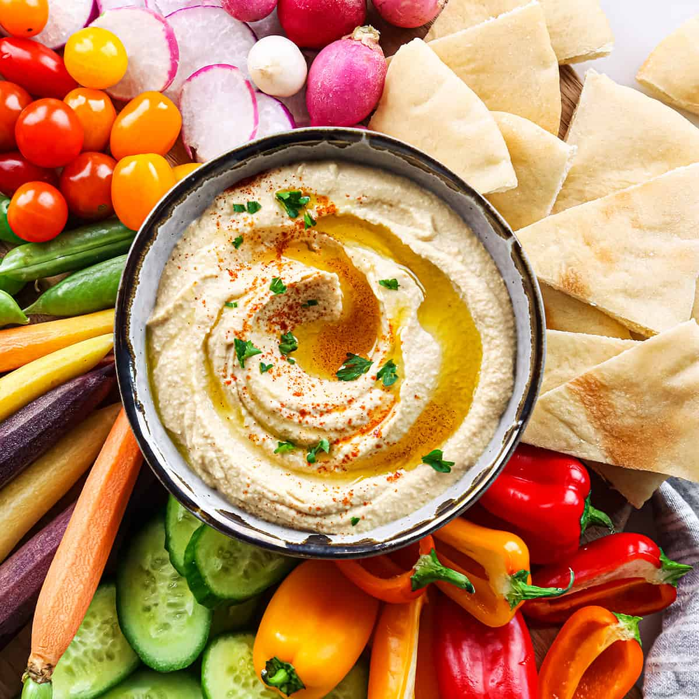

Home
Homemade Hummus

Description
This recipe for hummus is a family version that has been passed down
for many generations. Eat with warm pita bread.
Ingredients
- 2 cloves garlic
- 1 (19 ounce) can garbanzo beans, half the liquid reserved
- 4 tablespoons lemon juice
- 2 tablespoons tahini/li>
- 1 teaspoon salt
- 2 tablespoons olive oil
- black pepper to taste
Directions
-
Chop garlic in a blender. Pour garbanzo beans into the blender,
reserving about 1 tablespoon for garnish. Add reserved liquid,
lemon juice, tahini, and salt to the blender. Blend until creamy
and well mixed.
-
Transfer mixture to a medium serving bowl. Drizzle olive oil and
sprinkle pepper over the top. Garnish with reserved garbanzo beans.